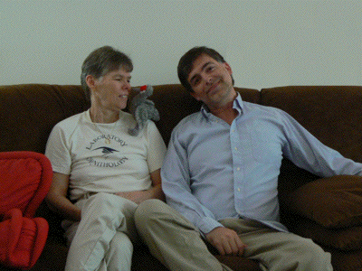

Christmas in Paradise 2008
Christmas in Paradise 2008  Christmas in Paradise 2008
Christmas in Paradise 2008
December 21 2007 We enjoyed celebrating the solstice at Michele and Guen's. The next morning, we woke to find that some nocturnal visitor (probably a raccoon) had placed one of our driveway lights in our birdbath! We spent some time that afternoon with David and Ross, who were visiting from Seattle.
December 25 2007 We went to the beach, as is our Christmas tradition. We counted 18 species of birds, and found a nice piece of driftwood. Later that evening, we witnessed a Christmas miracle: the color of one of the bubble lights on our tree changed from red to yellow!
December 30 2007 We attended Michael and Deborah's Old Year's Eve Party. Erich spilled his drink (he never could hold his liquor). An effigy of Bush was burned. The next night, we held our annual New Year's Eve Party, and made predictions about what 2008 would bring.
January 1-3 Our friends Sue and Mark from graduate school, now living in Nebraska, came for a visit for a few days. We saw manatees at Blue Spring State Park and saw shore birds at Bethune Beach. A few days later we were invited to Barbara's first annual (we hope) New Year Brunch, and had to be rolled out the door when we left.
January 10-13 Erich's friend Barbara visited from Albuquerque. We saw a movie, drove to St. Augustine where we shopped in Old Town and toured the fort, canoed at Blue Spring State Park (where we saw yellow-crowned night herons), made unbelievably decadent hot chocolate from scratch, visited Leu Gardens in the pouring rain, listened to live music at the Abbey, watched Erich's Indianapolis Colts lose their playoff game, and shopped in quaint Mount Dora.
January 17 We spotted a few hooded mergansers at Earl Brown Park.
January 26 Erich had to tell the cashier at the grocery store the round thing he was buying was a grapefruit. And Novak Djokovic, a good friend of one of Erich's senior research students, won the Australian Open tennis tournament.
January 31 Historically, we tend to jinx Stetson basketball games. But this year, we had won 10 in a row at home, and we figured it was safe to go see another game. Nope, we lost 83-75.
February 2 We went to the Deland Dog Parade for the first time. The following day we went to the Mount Dora Art Festival, and watched the previously-super Patriots lose the Super Bowl.
February 8-10 A busy weekend: We had Turkish food for the first time, celebrated the Chinese New Year by playing mah jongg, and saw our first softball game of the year.
February 29 On leap day, our refrigerator stopped working. Luckily this was the start of our spring break (and bike week in Daytona). The orchid that David and Ross brought us finally did what all plants in our house do eventually.
March 17 On St. Patrick's Day we had a department meeting. When we were unable to decide a particular issue, our secretary taking notes cast the deciding vote.
March 25 Walking on campus, we watched as a hawk carried off an unsuspecting squirrel for lunch. The previous day, our water dish was visited by mama raccoon and her 3 cubs.
April 13 After being inspired by an episode of Scrubs, we had brinner instead of dinner. A couple days later, Erich got his hair cut in the dark because the power had gone out.
April 19 Margie spotted a black-throated blue warbler at our water dish, a bird she had seen only once before decades ago. The next day we went canoeing and saw an eagle and a green heron up close and personal.
April 30 On Erich's birthday, he received a most unusual present: his idiot chair falling asleep and snoring in a senior research presentation! He also got the sculpture below made by Guen, which is now hanging above our tub. His material presents were 0, 4, 5, 7, 17, and 35 days late.
May 1 We attended a Beltane Fire dinner organized by Guen. In addition to the scrumptious food, and a game encouraging intimacy, we had a belly dancing show and danced around a May pole. Erich got the short ribbon and was consequently tied to the pole.
May 12-14 After postponing it for health and work reasons for 18 months, Erich finally did jury duty. The first day he was impanelled 3 times before he was chosen for a jury, an armed robbery and assault with a deadly weapon case. The trial itself was the following two days, with Erich being elected foreperson for the jury. Highlights include: A disoriented spectator got lost and sat with us in the jury room. One of the jurors was disqualified halfway through the trial for talking to the wife of the accused during a break. A person who entered the courthouse right in front of Erich put his large knife through the metal detector on his way to observe a trial. Erich smuggled doughnuts into the jury room. Erich handled a gun for the second time in his life. Our deliberation lasted all of 50 minutes, half of that because some members of the jury didn't want to return a verdict too quickly. In the end, because there was no box for "incredibly unbelievably guilty", the defendant was guilty as charged on both counts. Afterward, out of curiosity, Erich drove by the scene of the crime 3 miles from the courthouse.
May 14-16 Margie's hard disk started making "peek" sounds like a downy woodpecker. She called Dell and they agreed to send a new hard disk. She backed up all her data, as she does after every semester, and less than 24 hours later, her hard disk died. With some help from Rob, she set up her new computer, and it was as good as new in a week.
May 17 With our friends Lynn and Chris, we visited a PostSecret postcard exhibition in Melbourne (where Erich filled out his own postcard), browsed a farmer's market where two wild parrots were chirping, got a great seafood meal, browsed a craft fair, went for a swim, and watched videos of their recent trip to Vegas.
May 20 Margie's gym got an annoying TV, and she had an appointment for a dental crown the next day. With uncharacteristic swiftness, she spent 15 minutes buying an iPod Shuffle and 2 hours ripping some music, thus joining the current decade. The hapless Hatter baseball team managed to make the conference tournament, but only because 4 teams in our conference were ineligible for tournament play. As loyal fans of the team, we went to watch them end their season, with a 26-33 record, their first losing season this millennium.
May 25 At dinner with Barbara and Missy, a bottle of steak sauce dissolved on our table, spilling sauce everywhere.
May 27 We found a website called "Young Me, Now Me", a collection of old photos that people have retaken years later. We decided to update a 20-year old photo of ourselves. The rest of the photos can be seen here.
June 17 Our garage door is huge and made of metal, so when our garage door spring broke, our cars were trapped inside. We called in reinforcements, and left our garage door open for several days until we could get it repaired.
June 25 For the tenth year in a row, some of Erich's puzzles were used for the U.S. Puzzle Championships. You can find the puzzles here. Also this week Erich received two puzzle magazines that he contributed puzzles to.
June 26 Erich started walking 3 miles every morning.
July 4 Four wild turkeys explored our wild yard.
July 22 We celebrated our 21st anniversary. We saw the fifth Batman movie, ate at Brio, perused a Borders, stuffed ourselves with chocolate fondue, made googly eyes at each other, and spent an incredibly romantic 2 hours on I-4 getting home because of a wreck.
July 23 Erich finally learns how much chocolate is too much.
August 3-6 We took a much-needed vacation to Ft. Myers Beach. Shelling was a bust, but we toured Ding Darling Wildlife Refuge, did some Christmas shopping and some shoe shopping, saw a movie, went on a rain-shortened nature cruise where we saw dolphins and manatees, had a drink or two at the tiki hut, played shuffleboard, walked on the beach, and had the best food of any vacation yet.
August 11-12 Margie scraped the back bumper of her prelude. So she had it repainted and the letters reattached differently.
August 20-22 Tropical storm Fay blew through, canceling our first three days of class. Erich stopped walking every morning.
September 17 Margie got called for jury duty for the first time ever. Erich was interviewed by the FBI about David wanting a security clearance. The next day, Margie got a phone call from a complete stranger in New York about her music web page. And Erich caught a star athlete cheating.
September 20 Barbara gave Erich a ticket to go see Barack Obama in Daytona. After waiting in line for two and a half hours, he got to see him talk for 30 minutes. Barbara, who was further back in line, didn't even get in because there were so many counterfeit tickets!
October 3 While driving home from work, Erich saw a car attempt a U-turn, drive up on the sidewalk, and hit a bench. One of Margie's former professors, George Lofquist from Eckerd, donated a number of
books, significantly increasing the size of Stetson's math library. And Erich caught the same athlete cheating AGAIN.
October 8-12 For our fall break, we went back to Ft. Myers Beach. We generally slept late, ate well, and spent many hours stalking and photographing birds. Our final count was 35 different species. Erich saw his first peregrine falcon, and found his first sand dollar. The one day it rained, we went to see a movie, and Margie almost went into the film "The Women" when she needed to use the restroom. Margie humiliated Erich in mini-golf. While eating at a Mediterranean restaurant, the couple next to us left after not being served, and was dragged back in by the owner. And we found a new coffee/wine bar for dessert. You can find plenty more small pics here.
October 15 After midterm grades came out, one of Erich's advisees dropped 4 of her courses. After attending debate parties for the last few weeks, we finally hosted the last one. We snacked and talked and threw marshmallows at the TV when candidates said something stupid. Margie found yet another outlet for her frustrations by taking up the punching bag at her gym.
October 30 We enjoyed the annual Halloween party hosted by Michele and Guen. Pictures of the rest of the Halloween costumes can be found here.
November 4 We went back over to Michele and Guen's place for an election returns party. Luckily we didn't have to wait long for the good news.
November 13-16 We went to Margie's 35th college reunion at Eckerd College. We stayed on the beach, ate well, drank a lot, hung out in a hammock, took a boat tour of the campus (which is surrounded by water on 3 sides), met one of Margie's classmates who was almost a billionaire before the economic crisis, did some bird watching, played and reviewed a new mini-golf course, saw E. O. Wilson speak, and watched fireworks. More details and some small pics are available here.
November 19 Our friends Jeff and Debby (and daughter Kira) visited from Indianapolis. We did dinner, a tour of campus, and dessert at our friend Hari's restaurant Cress. The next day, Erich's dental hygienist's water spray wouldn't shut off and Erich's shoulder and the floor got soaked!
November 22 We went to the DeLand Art Festival, but didn't buy anything this year. That evening we went Jacksonville with Michael and Deborah to see John Prine in concert.
November 27 We spent Thanksgiving with Missy, Barbara, and some of Barbara's family visiting from Michigan. We came home with leftovers of everything except turkey, so we bought more turkey!
December 6 Margie had lunch with Phyllis, an old friend from Stetson. They laughed a lot
and admired Rob's new mini-computer.
December 10 While on vacation in Bulgaria, Erich's friend Barbara sent Erich his first e-mail from that country. The countries Erich has been e-mailed from are here. We gave our last final exams! Exactly 12 of Erich's 32 Precalculus students passed the course. And we decided that this year instead of buying presents for each other, we would give to trickleUP.
December 14 After taping every episode of The Sopranos, Erich finally started to watch them. Also this year, we finished Gilmore Girls and Boston Legal, and started Deep Space Nine and The Mentalist.
December 21 Margie went to the emergency room after being bitten by a neighbor's dog. But it didn't prevent us from celebrating the solstice with Michele and Guen, including jumping in the "bounce house" they rented for the kids. We plan to continue our own holiday tradition of opening presents from friends on Christmas morning, and then going to the beach to enjoy the 80o weather. You can see Erich's 2008 Christmas puzzles here or previous Christmas web pages here.

 
{kind=link}